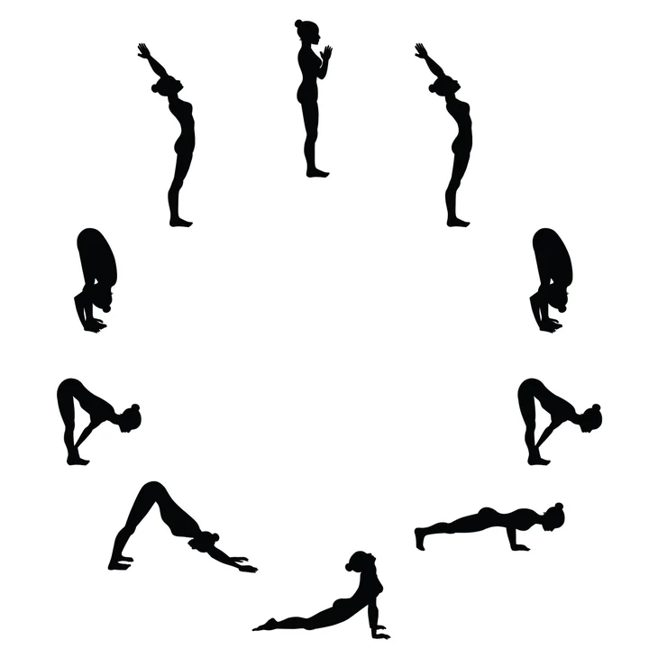

2022 is the 8th edition of the International Day of Yoga.The United
Nations General Assembly recognized 21st June as the International Day of Yoga at the initiative of Hon`ble Prime
Minister Shri Narendra Modi in 2014 via a unanimous vote. The theme of this year of International Day of Yoga will
be “Yoga for Humanity”.
The main event of the IDY- 2022 demonstration will be held at Mysuru, Karnataka led by Prime Minister Narendra
Modi.
12 Surya Namaskar Steps

Step 1: Prayer pose – Pranamasana.
Step 2: Raised arms pose – Hastauttanasana. ...
Step 3: Hand to foot pose – Hasta Padasana.
Step 4: Equestrian pose – Ashwa Sanchalanasana.
Step 5: Stick pose – Dandasana.
Step 6: Salute with eight parts or points – Ashtanga Namaskara
Step 7: Cobra pose - Bhujangasana
Step 8: Mountain pose – Parvatasana
Step 9: Equestrian pose – Ashwa Sanchalanasana
Step 10: Hand to foot pose -Hasta Padasana
Step 11: Raised Arms Pose- Hastauttanasana
Step 12: Standing Mountain pose -Tadasana
Ministry of AYUSH AYUSH Bhawan,
B-Block, GPO Complex, INA, New Delhi-110023
Telephone No. 1800-11-22-02 (9:00 A.M to 5:30 P.M) 011-24651942